Reviews & Opinions
Here are my opinions on video games i've played that can also count as reviews.
Don't take these reviews seriously, I'm not a reviewer.
KLONOA: Door To Phantomile (PS1)NAMCOKlonoa is one of the best platformers I've ever played. It looks really good, controls are very fluid, music so good that I have every single track in the ost in my playlist. Oh my god, this game is awesome. In Klonoa, you play as Klonoa and you do Klonoa things and get to the end of the level. Sounds simple, right? WRONG! This game is 2.5D!!!!! WOAH!! IT'S 3D AND 2D!!! THAT'S CRAZY!!! This game is just... I can't explain it. Play it. Play it. Play it. |
My rating: 10/10 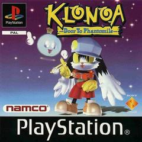 Download Gameplay Video |
RAYMAN (PS1)Ubi SoftRAYMAN is a very difficult, but very beautiful game. The first few levels are very easy, but as soon as you unlock Band Land, get ready to die... and die... and die. You will game over A LOT. This game literally kicks you in the balls when you don't expect it. Also this game also has a kick-ass soundtrack. Rayman controls very well. |
My rating: 7/10  Download Gameplay Video
Download Gameplay Video
|
PERFECT DARK (N64)RareAs a spiritual successor to goldeneye, this game really pushes the N64 to it's god damn limits. There is so much content and modes it's overwhelming (in a good way)! There's the solo missions, co-op missions, combat simulator (deathmatch mode), COUNTER-op missions (where your 2P is the enemy, why isnt this in more games), lots of cheats and more. There's so many graphical effects which makes me question how even is this running on a N64. However, there's one thing that can make this hard to play for some people. Framerate. This game can slow down A LOT in some areas, bringing the game down to a measly 9FPS sometimes! However, you could just play the Xbox 360 version to mitigate that. And of course, the awesome soundtrack. And also there's FUCKING FULL ON CUTSCENES WITH VOICES!??!?!? HOW IS THIS GAME BELOW 32 MB!?? |
My rating: 9/10 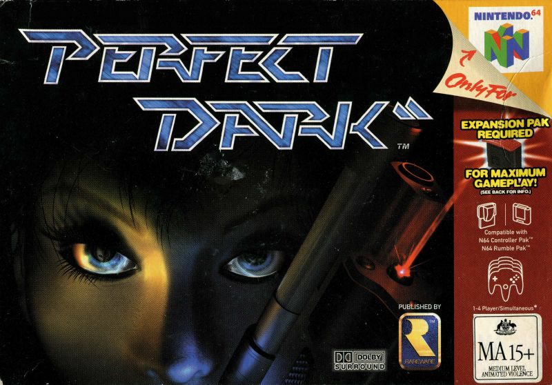 Download Gameplay Video |
PIKMIN 3 (Wii U)NintendoPikmin 3 is one of my most favorite games on the Wii U. I love how the Gamepad is handled, the story is great and I had lots of fun collecting all of the fruit. Beautiful looking water. Not much else to say, play it NOW!!! |
My rating: 8/10 
|
WALL-E (Xbox 360/PS3/Wii)Heavy Iron StudiosWALL-E is an okay game. My favorite level is the one where WALL-E steals EVE's gun for no reason and absolutley destroys 100+ Stewards for no reason. Multiplayer mode also has a mode where multiple WALL-E units battle it out with EVE's gun in a deathmatch fashion. It's fun. However, this game can be pretty buggy at times (especially the Wii version), and boring too, as some parts of the can be repetitive. Not much replay factor, too. |
My rating: 6/10 
|
Dr Robotnik's Mean Bean Machine (Mega Drive)SEGAYee haw. Jokes aside, this is an okay puzzle game. It reminds me of something else, but I can't put my finger on it... It sucks that you can't offset incoming beans. You can be instantly killed by your opponent if they make a big chain. |
My rating: 6/10 
|
SONIC CD (Mega CD)SEGASonic CD is Sonic's first (and only) game on the Mega CD. You have to save Little Planet from being taken over by Dr Eggman by travelling into the past, which I think is a pretty cool concept. It's just your average "Classic Sonic" game. I like the level design and overall it's fun. I also really like the "Mode-7" special stages. |
My rating: 7/10 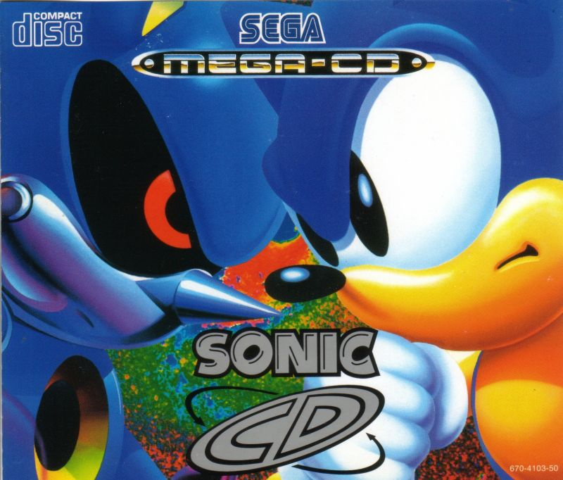 |
|
My rating: 8/10 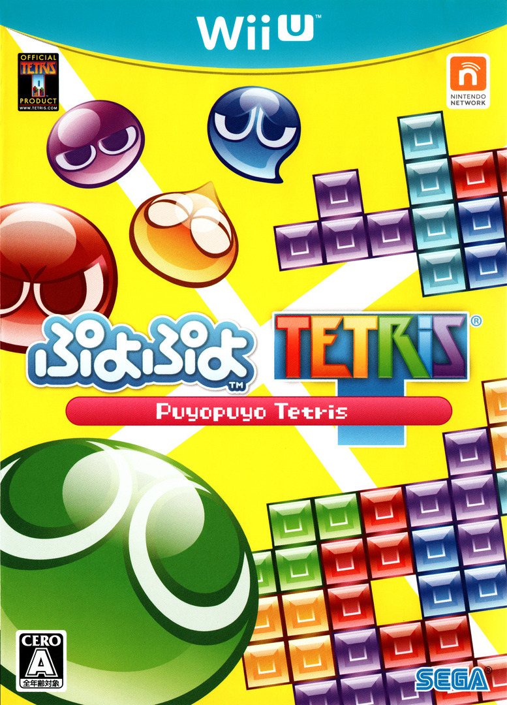 |
Mario Kart Wii (Wii)NintendoMario Kart Wii is a mario kart game for the Wii. This game is very unbalanced, and the online is still full of Funky Kongs (Please Stop). However, that doesn't matter because this game is hella fun to play, especially with friends and family! The battle mode is also great too, i wish more people played it online though. Stop playing Countdown Mode, you CTGP fuckers. |
My rating: 8/10 
|
The Lego Movie Videogame (3DS)WB GAMESThe Lego Movie Videogame for the 3DS is a weird game. Instead of being a regular Travelers Tales Lego game, it's completly different, where you literally cannot jump. What the fuck bro. Why DOESNT my lego man JUMP!??!?!? Anyways, you only have 1 life on a level. If you die, you have to restart the level, which SUCKS. This game was really unforgiving for young me and now it made me hate it so since I'm biased... You get the idea. Please just play the console version. |
My rating: 3/10 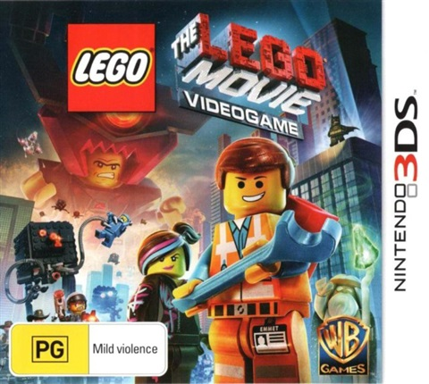 |
YO-KAI WATCH 3 (3DS)LEVEL-5YO-KAI WATCH 3 is currently the last game in the mainline series outside of Asia. It's a very long game, with a LOT of content. Even when you finish it, there's still a lot more stuff you can do! This game also switches up the battle system from the previous games. Instead of having a wheel you have to spin around to change where your Yo-Kai are on the battle field, it's now grid-based. You move the Yo-Kai medals to where you want them to be, and bam! After 1 "turn", they move there. You can also dodge Yo-Kai soultimates using the grid. In previous games, it would simply be an unavoidable attack if you didn't cancel it. The game's dialoge is pretty funny, and at the start of the game I love the moment where everyone is speaking in some yankee accent and the main character (Nate) is hella confused on what they're saying. I liked this game a LOT. I put around 35 hours into this game, which I think is the most I've ever put into for an RPG game. |
My rating: 9/10 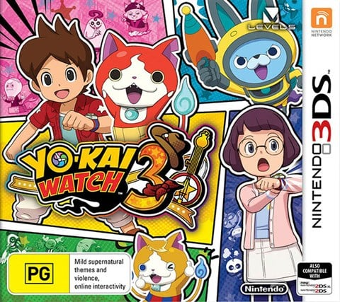 |
Klonoa 2: Lunatea's Veil (PS2)NAMCOKlonoa 2: Lunatea's Veil is so fucking good. Literally. I'm not joking. I can't believe I put off playing this game until I got a copy of the PS2 version, and oh my god, this game is a masterpiece. Klonoa 2's controls and gameplay is close to the first game, dare I say 1:1. This doesn't mean it's just the same stuff again, but "2", Klonoa 2 adds in new elements and stage gimmicks that I find so awesome, such as the launcher cannon things and the bosses. The levels that stood out the most for me were "Maze of Memories" and "Hyuponia". The game's soundtrack is just so damn good I listen to it in my free time. I also like how Klonoa seems to have learned from his past. I would recommend playing the PS2 version if you can first because it's a lot less jank than the remake, however if you don't mind it, or you need easy mode and speeding up cutscenes, play the remake instead. Overall, I think Klonoa 2 is a fantastic sequel to Klonoa 1, and I can't wait for more. It's a shame Klonoa is still lesser-known, as literally every mainline game that has come out of the Klonoa franchise is extremely good. |
My rating: 10/10 
|
|
My rating: 8/10 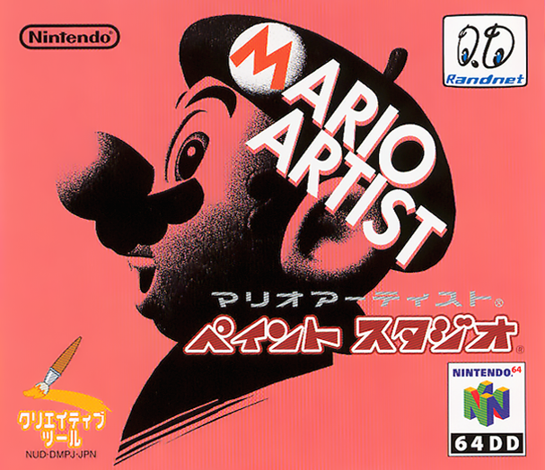 |
|
My rating: 10/10 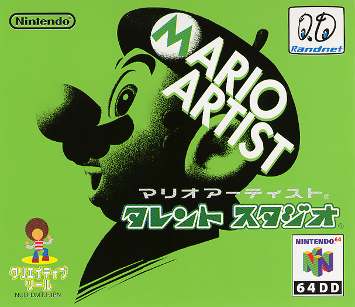 |
|
My rating: 9/10 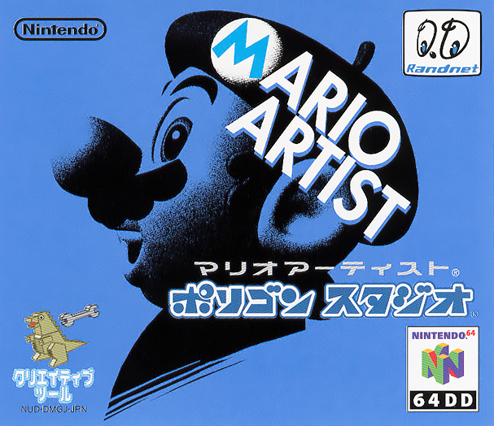 |
|
My rating: 8/10 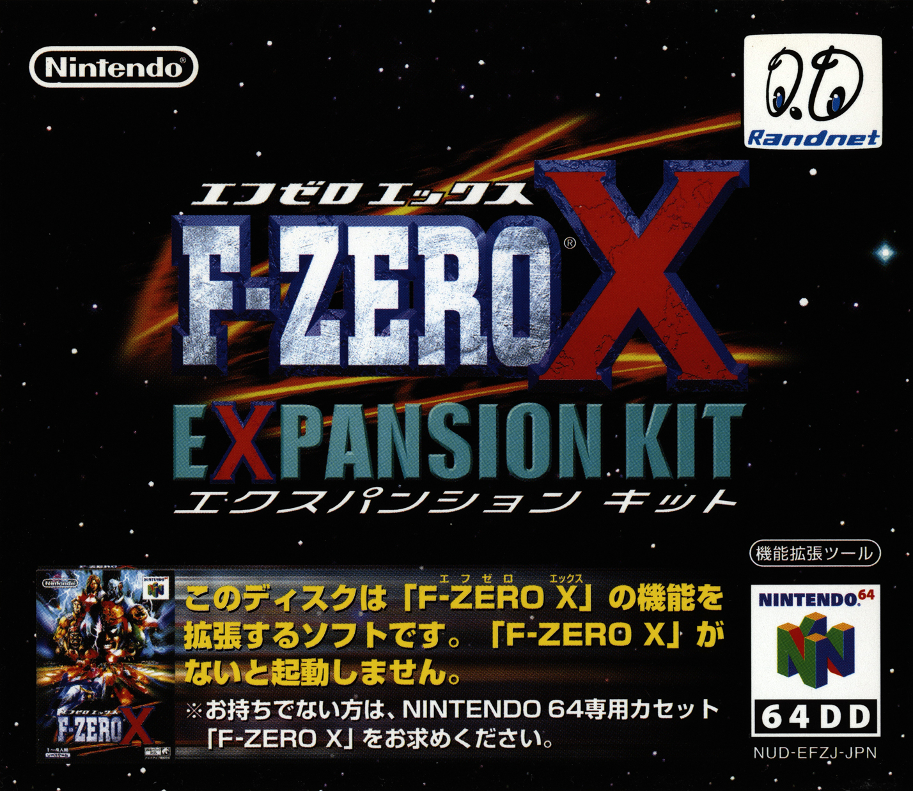 |
|
My rating: ?/10 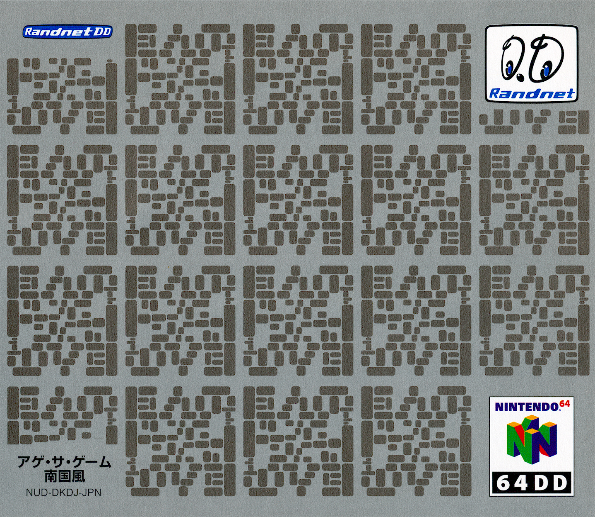 |
Big Rigs: Over the Road Racing (Steam)Margarite EntertainmentNever in my life would I expect Big Rigs to be re-released, but here it is. It's the original game with free DLC featuring some new vehicles and maps... and that's about it. There's now a launcher as well for some reason. The steam achievements are just spam and you don't even gain them for being a Winner, you just have to leave the launcher running and do nothing. Also, you can edit every text label in the launcher. The developers should have at least added some proper widescreen support and proper steamworks integration without the really hacky methods they used, but hey, this is Big Rigs we're talking about after all. As the AVGN would put it... This game is AAAAAAAASSSSS! I wouldn't recommend buying this unless you really love shovelware games and playing a game that lets you go under -1000kph, or its on sale for like $1 and you have nothing else to do... or you could just play the original game. At least they didn't patch the infinite negative speed glitch. |
My rating: 1/10 
|